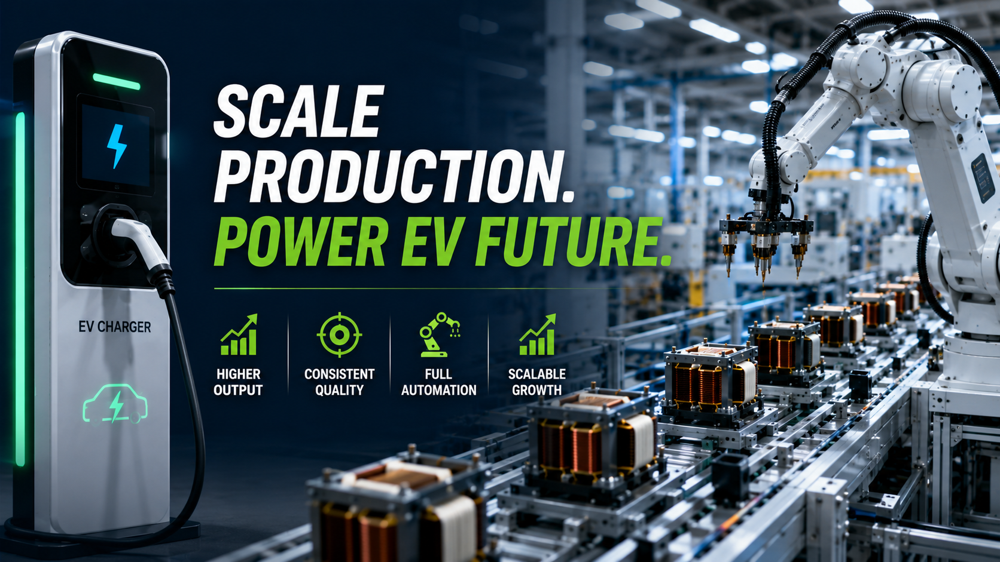

How EV Charger Manufacturers Scale Production with Automated Transformer Lines?

Summary
As electric vehicle adoption continues to accelerate worldwide, demand for EV charging infrastructure is growing at an unprecedented pace. From AC chargers to high-power DC fast charging stations, manufacturers must produce increasingly reliable power electronics while expanding production capacity to meet global market demand.
High-frequency transformers are one of the most critical components inside modern EV charging systems. To remain competitive, leading manufacturers are replacing labor-intensive production with automated transformer manufacturing lines that improve quality, increase throughput, and support long-term factory expansion.
This article explains why automated transformer production has become a strategic investment for EV charger manufacturers and how intelligent automation supports scalable manufacturing.
Technology
- EV Charger Transformer Manufacturing
- High Frequency Transformer Production Line
- Multi-Axis Automatic Winding
- Automatic Transformer Assembly
- Electrical Testing System
- Vision Inspection
- Smart Factory Automation
- MES Integration
- Production Line Automation
- Intelligent Material Handling
Challenge
The rapid expansion of the global electric vehicle market has created strong demand for reliable charging infrastructure.
As production volumes increase, EV charger manufacturers face several operational challenges:
Higher production targets
Increasing quality requirements
Shorter delivery schedules
Rising labor costs
Skilled worker shortages
Growing product complexity
Pressure to reduce manufacturing costs while maintaining reliability
Because transformers directly affect charging efficiency, safety, and long-term equipment reliability, manufacturers cannot simply increase output by adding more workers. Production quality must remain stable while capacity continues to grow.
Solution
Automated transformer production lines enable manufacturers to scale production without sacrificing quality.
Instead of relying on manual winding and assembly, intelligent automation integrates material feeding, multi-axis winding, precision assembly, electrical testing, visual inspection, and packaging into one continuous manufacturing workflow.
By standardizing every critical process, manufacturers achieve consistent transformer performance while significantly improving productivity and reducing labor dependency.
More importantly, automation provides a scalable manufacturing platform capable of supporting future growth in EV charging infrastructure worldwide.
Workflow & Layout
Raw Material Storage
↓
Automatic Material Feeding
↓
Multi-Axis Transformer Winding
↓
Wire Processing
↓
Core Assembly
↓
Automatic Soldering
↓
Glue Dispensing
↓
Electrical Testing
↓
Vision Inspection
↓
Laser Marking (Optional)
↓
Automatic Sorting
↓
Packaging
↓
Delivery to EV Charger Assembly Line
The transformer production line can also be integrated directly with EV charger assembly operations, improving material flow and reducing work-in-progress inventory.
Results & ROI
- Manufacturers implementing automated transformer production typically achieve:
- Higher production capacity
- Lower labor dependency
- Improved transformer consistency
- Reduced quality variation
- Faster production cycles
- Lower manufacturing cost per unit
- Improved production traceability
- Easier factory expansion
- Better long-term return on automation investment
- Actual ROI depends on production volume
- product mix
- and factory utilization.
Equipment List
- Typical equipment includes:
- Automatic Material Feeding System
- Multi-Axis Winding Machine
- Wire Processing Equipment
- Transformer Assembly Station
- Precision Soldering System
- Glue Dispensing Machine
- Electrical Performance Testing Equipment
- AOI Vision Inspection System
- Conveyor & Transfer System
- Automatic Sorting System
- Packaging Equipment
- MES / ERP Integration (Optional)
- Smart Warehouse Integration (Optional)
Project Overview / Opening
Electric vehicle charging equipment is becoming one of the fastest-growing sectors in global manufacturing.
Governments, utilities, and private investors continue expanding charging infrastructure to support the rapid adoption of electric vehicles. As a result, EV charger manufacturers must significantly increase production capacity while maintaining the high reliability required for power electronics.
High-frequency transformers play a vital role in power conversion efficiency and charging performance. Their manufacturing quality directly affects the safety, efficiency, and lifespan of EV charging systems.
For manufacturers planning long-term growth, automated transformer production has become a key component of factory modernization.
Key Points
- Global EV charging demand continues to grow rapidly.
- High-frequency transformers are critical power components.
- Automation improves both production capacity and product quality.
- Multi-axis winding increases precision and consistency.
- Automated inspection reduces manufacturing defects.
- Digital production supports complete quality traceability.
- Smart factories enable flexible future expansion.
- Automation strengthens long-term competitiveness in the EV industry.
Implementation / Workflow
A successful automation project begins by evaluating transformer specifications, annual production targets, and future market demand.
Manufacturers then design an integrated production workflow where multi-axis winding serves as the core manufacturing process.
Automatic assembly, soldering, electrical testing, visual inspection, and packaging are connected into one continuous production line supported by intelligent material handling and digital production management.
By integrating MES systems and production analytics, manufacturers gain real-time visibility into equipment utilization, product quality, and production performance, enabling continuous operational improvement.
Customer Value / Results
Automated transformer production delivers significant business value for EV charger manufacturers:
Faster response to growing market demand
Stable transformer quality for high-power charging applications
Reduced labor shortages and recruitment pressure
Lower long-term manufacturing costs
Improved delivery performance
Higher customer confidence through consistent product quality
Flexible production for multiple charger models
Stronger competitiveness in international markets
Scalable manufacturing platform supporting future factory expansion
Rather than simply increasing production speed, automation helps manufacturers build a sustainable and future-ready production system.
Conclusion / Next Step
As the global EV charging market continues to expand, manufacturers must increase production capacity without compromising reliability, efficiency, or product quality. Automated transformer production lines provide the manufacturing foundation needed to support large-scale growth while reducing operational costs and improving long-term competitiveness.
We help manufacturers worldwide design, source, integrate, and deliver industrial automation projects by leveraging China's manufacturing ecosystem. Whether you're building a new EV charger factory, expanding transformer production, or upgrading an existing manufacturing facility, we provide complete support from production line planning and equipment sourcing to system integration and project delivery.
Ready to scale your EV charger manufacturing? Visit our Contact page to discuss your project requirements or submit an inquiry. Our engineering team can help you develop a customized transformer automation solution designed around your production goals, factory layout, and future expansion plans.
SEO Title
How EV Charger Manufacturers Scale Production with Automated Transformer Lines?
SEO Description
As electric vehicle adoption continues to accelerate worldwide, demand for EV charging infrastructure is growing at an unprecedented pace. From AC chargers to high-power DC fast charging stations, manufacturers must produce increasingly reliable power electronics while expanding production capacity to meet global market demand.
High-frequency transformers are one of the most critical components inside modern EV charging systems. To remain competitive, leading manufacturers are replacing labor-intensive production with automated transformer manufacturing lines that improve quality, increase throughput, and support long-term factory expansion.
This article explains why automated transformer production has become a strategic investment for EV charger manufacturers and how intelligent automation supports scalable manufacturing.
Related Blog
Start with Your Business Challenge
Tell us about your warehouse, factory, or production requirements. We'll help you explore practical automation solutions and relevant project references.